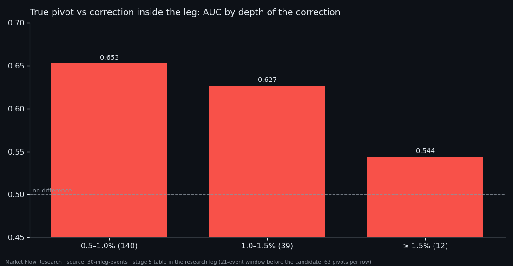
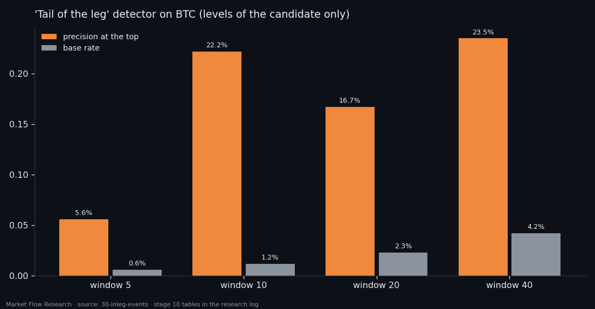

The Book Sees the Edge of a Leg, Not Its End — Event by Event on BTC
Event by event on BTC, every feature of our order-book class carries its place in the leg: a U-shaped profile that holds inside individual legs, with the same sign in 80% of them. But what it reads is the distance to a pivot, not the progress through the leg. It tells a real end of a leg from a shallow 0.5% correction (AUC 0.669), and loses that ability as the correction deepens — at 1.5% there is nothing. A detector of "this is the tail of a leg" lifts precision up to ×19 over the base, yet cannot tell a tail from a head. The book knows it is at an edge; it does not know which one.
① Place in the leg is written in every feature
Study 29 measured the class along the leg with one summary per event. This one goes event by event on BTC (70,647 events, 70 legs of the 2.3% zigzag on EMA-10) and summarises each event six ways — mean, first and last block, peak, spread, slope — in ranks.
The profile is U-shaped for all seven features and all six summaries. Flow-per-level ratios and the price derivative are higher at the edges; level-per-flow ratios are lower, and lowest in the last tenth (0.329 for resistance per unit of buying, against 0.47–0.48 mid-leg). It is one statement read from both sides of the ratio: at the edge of a leg the flow side is thick relative to the level side, in the middle the other way round. The strongest summaries are not the mean but the spread and the peak inside the event. Up and down legs show it with the same sign.
The effect is not an artefact of pooling legs from different regimes: measured inside each leg separately, edge against middle holds (AUC 0.36–0.61, t up to 7.2) with the same sign in 80% of legs. But there is no monotonic walk from one pivot to the next — Spearman with position never exceeds 0.04. The class reads distance to a pivot, not the share of the leg travelled. And the direction of a single event's own move is invisible to it: only the price derivative separates events moving with the leg from events moving against it (t +6.5); for the rest of the class |t| < 4.

② A real end vs a correction: only when the correction is small
Knowing the pivot afterwards is easy; the causal question is harder. Inside every leg there are places where price turned against it and the leg went on. Is the true end different from such a correction — a pivot of a nested smaller zigzag, at least 40 events from the leg's ends?
With 1,512 combinations tried (42 measures × 3 curves × 4 windows × 3 metrics), a |z| near 3 appears by itself, so every result is compared with the largest |z| of the whole search after shuffling the pivot/correction label 500 times.
Against 0.8–1.5% corrections the class sees nothing (p = 0.42–0.59). Against small 0.5% corrections there is a difference: support per unit of selling in the last block, five events before the candidate — AUC 0.669, z +4.0 against a noise level of 3.0 (p = 0.008). And it fades with depth: 0.653 for 0.5–1% corrections, 0.627 for 1–1.5%, 0.544 beyond. The deeper a pullback, the more it looks like a real end to the book — which is exactly the case where a bot would need to know.

③ The tail of a leg is visible — but so is its head
Three more questions pressed on the same point.
When can a new leg be called? The difference between the two sides of a pivot is present in the raw 63 numbers of an event from the very first event after it (AUC 0.26 on the strongest number, z −6.5, p = 0.000 against shuffled labels). A model on batches of events climbs to 0.727 at 6–10 events and stops. But its most confident batches contain no true leg starts at any batch length. Starts of up legs and down legs are identical to the class: it does not say which way the new leg went.
Do batches of one leg resemble each other more than batches of a neighbouring leg? No — at equal distance in time and the same place in the leg, AUC stays at 0.5 (best 0.580, p = 0.183). What looked like a difference was the leg edge again, and whatever separates "our leg" from "the next one" turned out to be time, not the pivot.
Is this the tail of a leg? The head and tail of the same leg are unrelated (Spearman ≈ 0 on six of seven features), while the tail of a leg correlates with the neighbouring leg's head at +0.75 to +0.81 — what is close in time is alike. A detector on the levels of the candidate alone reaches AUC 0.74–0.82 and precision at the top of 5.6–23.5% against base rates of 0.6–4.2% — up to ×19. Comparing with the leg's head only hurts. And the same detector separates a tail from a head at only 0.59–0.61 (p = 0.14–0.30): it catches any edge of a leg, not its end. The book knows it is at an edge. Whether the move is ending or beginning, it cannot say.

Reproduce this study
- Research log (.md, Ukrainian): goal, data, plan, scripts, every confirmed stage and table — enough to rerun the study
- Reproduction kit (.zip): the study's scripts, project rules and base scripts that build every class
If this changed how you read the tape, the natural next step is Volume Is the Fuel — Not the Steering Wheel — We recorded the Binance order book every second for six coins over five months and ran eighteen tests on what volume really does.
Volume Is the Fuel — Not the Steering Wheel
We recorded the Binance order book every second for six coins over five months and ran eighteen tests on what volume really does.
About Market Research Lab — What We Collect and Why
Most market commentary is storytelling.
From Calm to Calm: a Standard for What Counts as a Signal (BTC)
We stopped defining market signals with a stopwatch.
The Wall That Goes Quiet: What Resting Liquidity Predicts
We measured resting limit liquidity sitting on both sides of the book second by second across six coins, and asked the only question that matters:….
Comments
Discussion is powered by GitHub. Enable it by adding secrets/giscus.json (repo IDs from giscus.app).